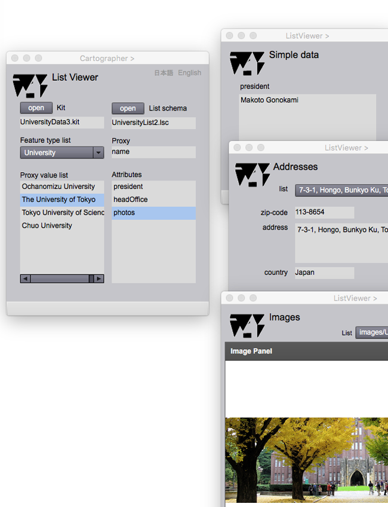

List Viewer
The list in this case is an one dimensional map for representing features. It can represent attribute values of each feature by selecting a proxy of a feature.
List Viewer

Figure 1. Cartographer page, List Viewer and info. pages
The procedure of information display is as follows.
1. Selet the Kit.
2. Select the list schema to show the rules of listing.
3.Select the feature type. The list of feature instance is listed in the "proxy value list".
4. Select the attribute type at "Attributes" lisr for display attribute value on infor. page or geometry page.
Fields
Kit
The file name of the kit is displayed in this field.
List schema
The file name of the list schema is displayed in this field.
Feature type list
The name of the feature type selected from the kit is displayed in this field.
Proxy
The proxy name of the feature is displayed in this field.
Proxy value list (selectable)
The list of proxy attribute value is listed in this field. This list can be said as the one dimensional map of features.
Attributes (selectable)
An attribute value is displayed by selecting attribute types in this list.
Buttons
open (Kit)
The kit is opened by clicking this button.
open (List schema)
The list schema is opened by clicking this button.
Proxy value list
Attribute value listing is possible by selecting the feature instance listed in "Proxy value list".
Attributes
Info. pages are displayed by selecting attribute types in "Attributes" list.
日本語
今あなたが読んでいるドキュメントが表示されます．
English
You can read the tutorial written in English.